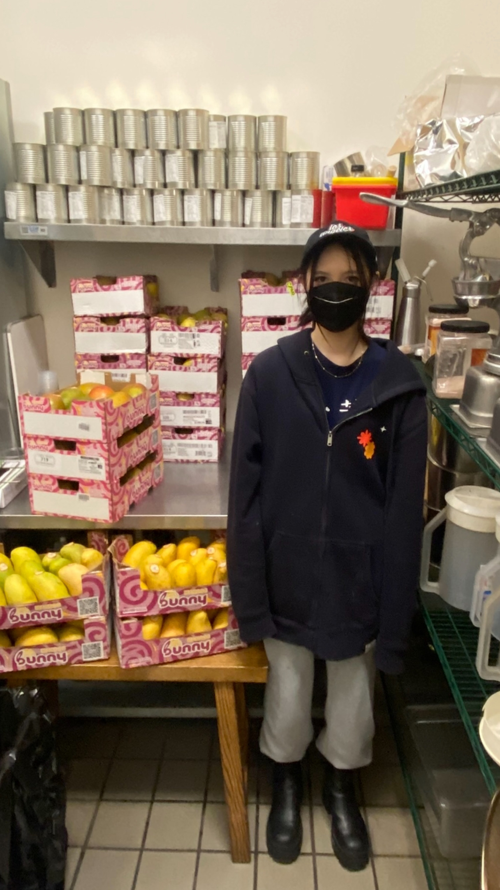
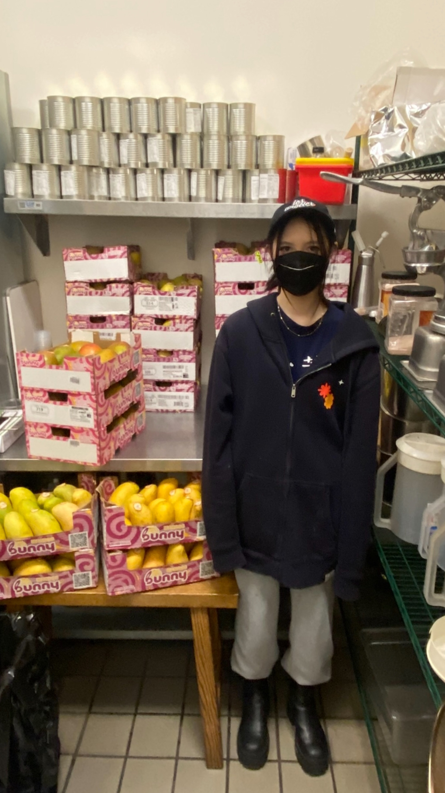
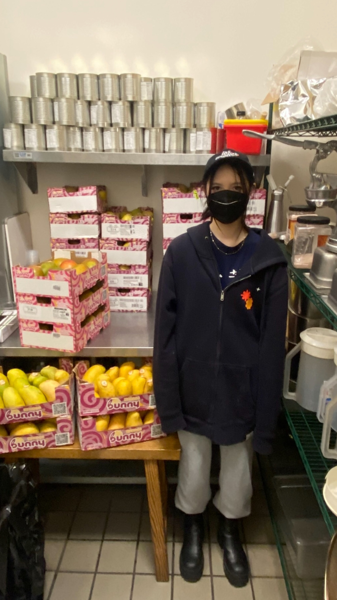

Mingyen Johnson
I am a Political Science- International Relations major at the University of California Riverside. Growing up, I was always aware of the importance of being politically and socially aware. I watched Last Week Tonight with John Oliver every Monday in an attempt to stay up to date on current affairs.
As I got older, I felt a personal moral responsibility to protect those whose voices were not heard. I felt that if I was aware of public policy and political agendas that went against people’s livelihoods, I should do something about it.
As I have taken more courses at the University of California RIverisde, my passion for the subject has grown. Through classes such as Public Policy, World Politics, and Politics of the Underdeveloped World, I have learned about how the world is run and the reality of our political climate.
I believe that if I have a voice that people will listen to, I should use it to help those in need. The more I learn in my classes, the more I can find the best strategies and ways to assist others. I know that it is a far goal to reach to eradicate issues like oppression, world hunger, political corruption, and prejudice, but I feel that if I do nothing, I am just complicit in the issue.
I hope that as I continue my education, I can make a positive impact. I also would like to improve my public speaking skills and my social skills, which are both important in jobs that pertain to dealing with the public.
Another skill that assists me in my studies is my exposure to different languages. When I was a child I was put in Mandarin classes and Spanish classes. Later, in high school, I took classes in Korean language at my local community college. With this exposure, I am able to communicate with many different cultures which open my eyes to many experiences.
I have been lucky enough to travel a lot with my family and alone after high school. I have had the opportunity to go to Kenya, Italy, the Netherlands, China, and Mexico. On my own, I also explored Japan, South Korea, and Hong Kong. I have developed the skills of being a guest in different countries and being open-minded to other cultures.
Overall, Political Science is a subject that I am incredibly passionate about. My goal is to help those who are oppressed by the systems that are currently in place. I hope to continue my travels and be able to have more incredible and mind-opening experiences.
Experience
Education
Uuniversity of California Riverside
Santa Monica High School
Santa Monica College
Portfolio
 



